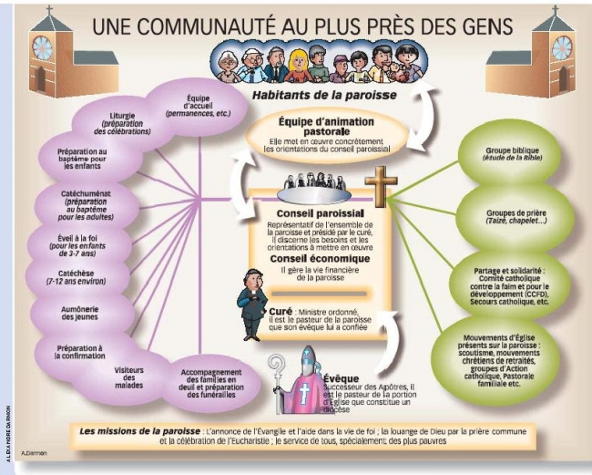

Paroisse Notre Dame de l'Assomption
Ham
Ham

- Organisation générale
- Une Equipe de Conduite Pastorale (E.C.P.)
- Le Conseil Pastoral Paroissial (C.P.P.)
- L'Assemblée Paroissiale (A.P)
EQUIPE DE CONDUITE PASTORALE
Cette équipe veille, au nom du Christ, sur le bien et la mission de la paroisse. Cette équipe se constitue de :
- le prêtre responsable: Albert SAELENS
- une personne qui va veiller au "Annoncer": Michèle VAN HAMME
- une personne qui va veiller au "Célébrer": Philippe JACQUART
- une personne qui va veiller au "Servir": Thérèse LEMAIRE
- une personne qui va veiller à la vie matérielle et économique: Guy DESORMEAUX
- un coordinateur qui va veiller à la concertation, à l'animation et au travail de cette équipe: Etienne VILT
CONSEIL PAROISSIAL ou CONSEIL PASTORAL PAROISSIAL:
Finalité
Le Conseil Pastoral Paroissial est une équipe de baptisés (Prêtres, Diacres, Religieux, Laïcs) où se vit la coresponsabilité et la concertation pour écouter les appels de l’Esprit, réfléchir les orientations et proposer des projets pastoraux sur le territoire paroissial. Il permet aux différents groupes de se connaître dans leurs missions propres et de travailler en cohérence. Il veille à ce que la paroisse prenne des initiatives pour que l’Evangile résonne dans la vie des hommes. Les membres du Conseil Pastoral Paroissial sont appelés par l’Equipe de Conduite Pastorale.
Composition
Il est composé de 12 à 15 personnes :- les membres de l’Equipe de Conduite Pastorale
- les Animateurs Pastoraux de Secteur résidant sur la paroisse
- des personnes engagées dans les différents mouvements et services sur la paroisse
- des personnes représentant les différentes réalités de la paroisse
- un(e) religieux (se).
Durée et fonctionnement
La durée du mandat est de 6 ans, renouvelable une fois.Le Conseil Pastoral Paroissial porte attention à la vie des hommes et, à la lumière de la Parole de Dieu, écoute les appels de l’Esprit. Il propose des orientations pastorales paroissiales en lien avec les orientations diocésaines.
L’Equipe de Conduite Pastorale informe de son travail le Conseil Pastoral Paroissial lors de ses rencontres.
L’Equipe de Conduite Pastorale et le Conseil Pastoral Paroissial auront à cœur de communiquer régulièrement avec la communauté chrétienne.
L’Animateur Pastoral de Secteur peut-être invité par le Conseil Pastoral Paroissial au sein des paroisses du secteur où il ne réside pas, selon l’ordre du jour.
Le CPP se réunit au moins une fois par trimestre. Ce conseil suscite, au moins une fois par an, une Assemblée Paroissiale. Il écoute les suggestions, souhaits, questions de la communauté chrétienne.
ASSEMBLEE PAROISSIALE:
Constituée de chacun d'entre nous, elle est convoquée au moins une fois par an.
Elle donne son avis sur les orientations à prendre après avoir entendu l'Equipe de Conduite Pastorale qui rend compte de son travail, de ses questions et de ses difficultés.
extrait du livret bleu : Pour la conduite de la paroisse : une Equipe, un Conseil, une Assemblée

source : ici
source : ici
Site officiel de la paroisse de Ham maintenu par paroisseNdaHam@gmail.com - dernière mise à jour le 06/04/2015 - pour nous contacter